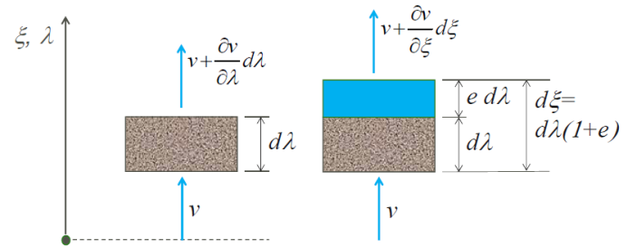
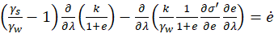
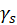
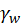
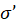
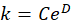
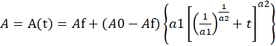
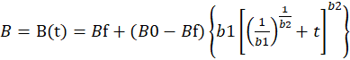

GOVERNING EQUATION
Mathematical description of a deforming slurry can be presented in either Lagrangian or Eulerian coordinate systems. In the Lagrangian formulation the changes are observed in the vicinity of a particle, while in the Eulerian formulation the changes in a fixed element in space are observed. Hence, the Lagrangian formulation is sometimes referred to as the material formulation while the Eulerian formulation is referred to as the spatial formulation. In the Lagrangian formulation the particle position could be referred to its initial location or to the location of the particle in a coordinate system in which the actual distances are reduced to the distances in terms of solids distances (no voids). In the latter case the coordinate system is referred to as a “reduced” coordinate system.
For one dimensional description of a settling slurry the relationship between the Eulerian and reduced Lagrangian coordinates is depicted in Fig. 1, in which ξ is the spatial coordinate while l is the reduced material coordinate.

Figure 1 – Relations between spatial coordinate ξ and reduced material coordinate l
Gibson et al. (1967) derived the following equation describing the large-strain consolidation process:
 (1)
Where
 = unit weight of solids
 = unit weight of water
e = void ratio
k = hydraulic conductivity
 = effective stress
CONSTITUTIVE EQUATIONS
For the settling scenario without creep, the compressibility and permeability relationships can be defined as stationary functions using constitutive parameters that do not change with time. For the case scenario without creep, computer program ConCreep_01 adopts relationships from CONDES0 (see Yao and Znidarcic 1997)
In CONDES0, the compressibility relationship is expressed as:
(2)
where A, B and Z are the constitutive (model) parameters.
The hydraulic conductivity is defined as:
 (3)
where C and D are the constitutive parameters.
To account for the creep mechanism, ConCreep_01 allows for the constitutive parameters A and B to change with time. I.e., to describe the creep behavior observed in laboratory experiments on tailings samples, A and B are expressed as the algebraic functions of time. The following relationships are adopted in the ConCreep_01 program:
 (4)
and
 (5)
Equations (4) and (5) allow for the time-dependency of constitutive properties A and B by introducing additional (creep) parameters. At time equal to zero, parameters A and B are defined by their initial values A0 and B0. Experimental evidence suggests that there is a limit in the change of parameters A and B. Therefore, parameters Af and Bf are introduced to define the final (limiting values) of parameters A and B at infinite time. Parameters a1and a2 are defined by fitting laboratory data to Equation (4), i.e. by finding the “best-fit” of a1 and a2 to match the values of A=A(t) determined at selected (discrete) time increments. Similarly, parameters b1and b2 in Equation (5) are matched to the values of B=B(t) determined as selected time increments accounting for the change in material compressibility due to creep.